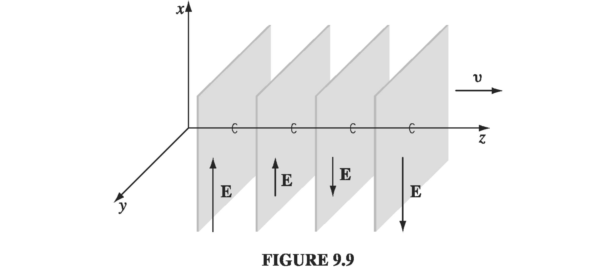

To get to a wave equation from these, we start with a curl of curl and use a standard vector identity
∇×(∇×E)=∇(∇⋅E)−∇2E
Use Faraday's law on the left hand side (and move the spatial derivative through the temporal one), and on the right hand side use Gauss' law to re-write the divergence
→∇2E−μ0ϵ0∂t2∂2E=ϵ01∇ρ+μ0∂t∂J"non-homogeneous" wave equation for E
In a vacuum, ρ=0 and J=0 so
∇2E−μ0ϵ0∂t2∂2E=0
which is just a standard 3D wave equation. We can identify the speed of propagation based on the constant of proportionality v=μ0ϵ01=c
We could also have started with ∇×(∇×B) to obtain
∇2B−μ0ϵ0∂t2∂2B=−μ0(∇×J)"non-homogeneous" wave equation for B
So, in vacuum you get the exact same wave equation
∇2B−μ0ϵ0∂t2∂2B=0
So, both E and B must satisfy these wave equations. We know that the wave equations admit certain sets of solutions, but that's not the entire story. We'll see additional constraints on solutions to E and B due to the fact that the waves need to satisfy all of the Maxwell equations, so E and B are very intimately linked.
9.2.2: Monochromatic Plane Waves
Consider monochromatic sine waves (plane waves) in a single direction, so that all variation happens in the z-direction. Again, using the superposition principle we'll be able to build up more complicated solutions.
E=E0cos(kz−ωt+δ)B=B0cos(kz−ωt+δ)
E0=E0,xx^+E0,yy^+E0,zz^

Let's apply Gauss' law (in vacuum)
∇⋅E=0
∇⋅(E0cos(kz−ωt+δ))=0
→∂x∂E0,xcos(kz−ωt+δ)+∂y∂E0,ycos(kz−ωt+δ)
+∂z∂E0,zcos(kz−ωt+δ)+E0,z(−ksin(kt−ωt+δ))=0
We've decided that there is no variation in the x- and y-directions, so only the final term survives, and must be equal to zero
E0,z(−ksin(kt−ωt+δ))=0→E0,z=0
Which is to say that EM plane waves are "transverse" waves.
Matching up components and canceling the sine functions,
→kE0,y=−ωB0,xkE0,x=ωB0,y
So every time you have an E field, you will have a B field in an orthogonal direction - they are mutually orthogonal - and they are in phase, since the proportionality factors are real.
9.2.3: Energy and Momentum in Electromagnetic Waves
To repeat, for monochromatic plane waves propagating in the z-direction,
E=E0cos(kz−ωt+δ)=E0cos(kz−ωt+δ)x^
B=B0cos(kz−ωt+δ)y^
and
E0/B0=c
What does the energy density due to these fields look like?
u=21ϵ0E2+2μ01B2=ϵ0E2=ϵ0E0cos2(kz−ωt+δ)
The electric and magnetic contributions are equal. The resulting Poynting vector is
S=μ01E×B=μ0E0B0cos2(kz−ωt+δ)z^
=μ0cE02cos2(kz−ωt+δ)z^=cϵ0E02cos2(kz−ωt+δ)z^
S=cuz^
So the Poynting vector points in the direction of propagation, and it has amplitude cu. What about the momentum density?
g=μ0ϵ0S=ϵ0(E×B)=c21cuz^=cuz^
The rate of oscillation of these waves is typically very high, so we are mostly interested in the average of the oscillatory behavior over a period. Recall that the time-average of cos2 over a cycle is 21, so
⟨u⟩=21ϵ0E02
⟨S⟩=21cϵ0E02z^
⟨g⟩=2c1ϵ0E02z^
Another useful quantity we usually throw around is the Root Mean Square (RMS) value of the field
⟨E02cos2(kz−ωt+δ)⟩=2E02=2E0≈0.7E0
The "intensity" of the electromagnetic wave is defined as its power per unit area, or energy per unit area per unit time
I=areapower=area⋅timeenergy
=⟨∣S∣⟩=⟨∣cuz^∣⟩=c⟨u⟩=21cϵ0E02
If the light hits the surface of a perfect absorber, it will transfer its momentum to the surface. In a time Δt the momentum transfer will be
Δp=⟨g⟩AcΔt
so the radiation pressure (average force per unit area) is
P=A1ΔtΔp=21ϵ0E02=cI
Of course, when falling on a perfect reflector, the radiation pressure is twice as big, since the resulting momentum of the reflected light switches direction instead of being absorbed.
Example Problem 9.10
The intensity of sunlight hitting the earth is about 1300 W/m2. If sunlight strikes a perfect absorber, what pressure does it exert? How about a perfect reflector? What fraction of atmospheric pressure does this amount to?
The radiation pressure for a perfect absorber is
P=cI=3⋅1081300≈4.3⋅10−6N/m2
The atmospheric pressure on earth's surface is about 105N, so
Atmos pressureRadiation pressure≈10−11
The resulting radiation pressure is tiny compared with the normal pressures we're used to, but in space where atmospheric pressure is absent the result can be significant, and laser beams on individual atoms with tiny masses can slow and trap individual particles via radiation pressure.